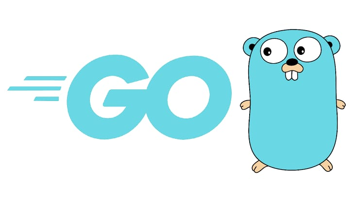

Golang:

Go is a statically typed, compiled programming language designed at Google by Robert Griesemer, Rob Pike, and Ken Thompson. Go is syntactically similar to C, but with memory safety, garbage collection, structural typing, and CSP-style concurrency. The language is often referred to as Golang because of its domain name, golang.org, but the proper name is Go.- There are two major implementations:
- Google's self-hosting "gc" compiler toolchain targeting multiple operating systems, and WebAssembly.
- gofrontend, a frontend to other compilers, with the libgo library. With GCC the combination is gccgo; with LLVM the combination is gollvm.
A third-party source-to-source compiler, GopherJS, compiles Go to JavaScript for front-end web development.